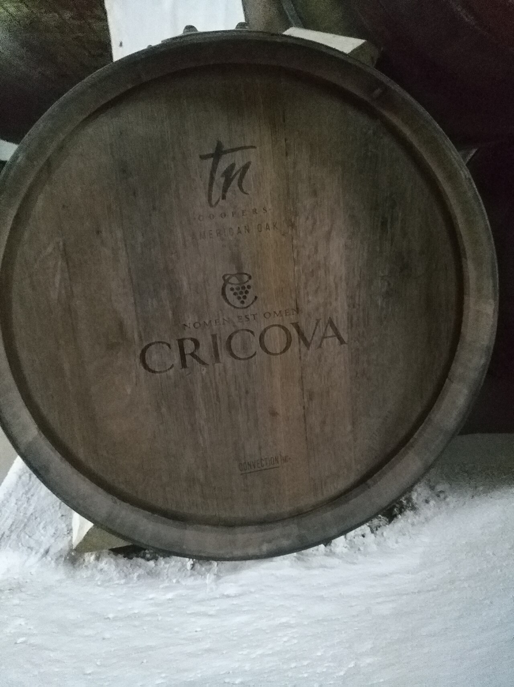
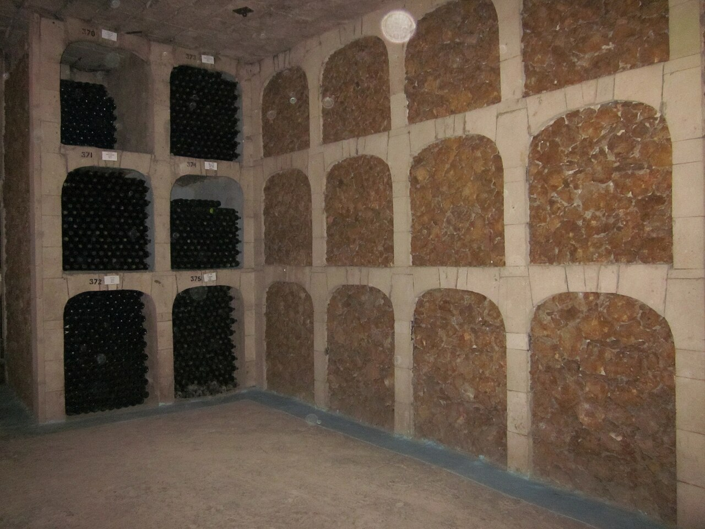
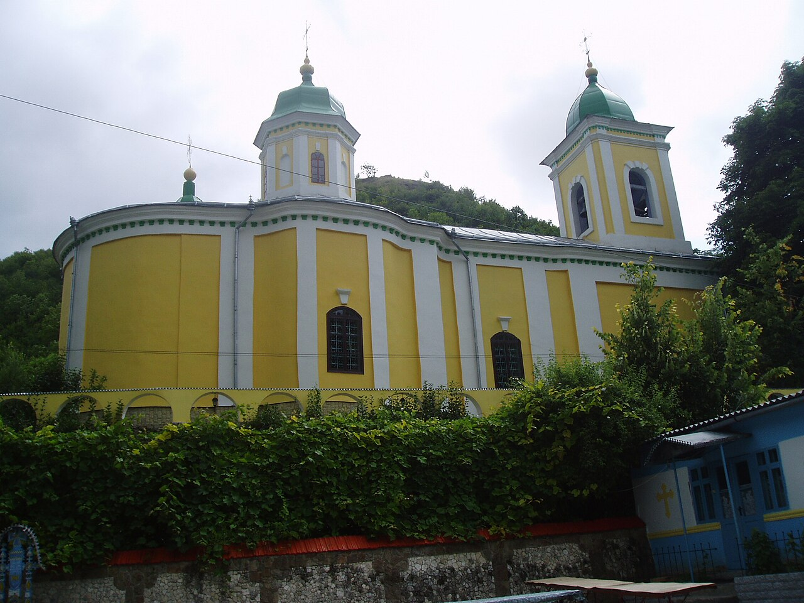
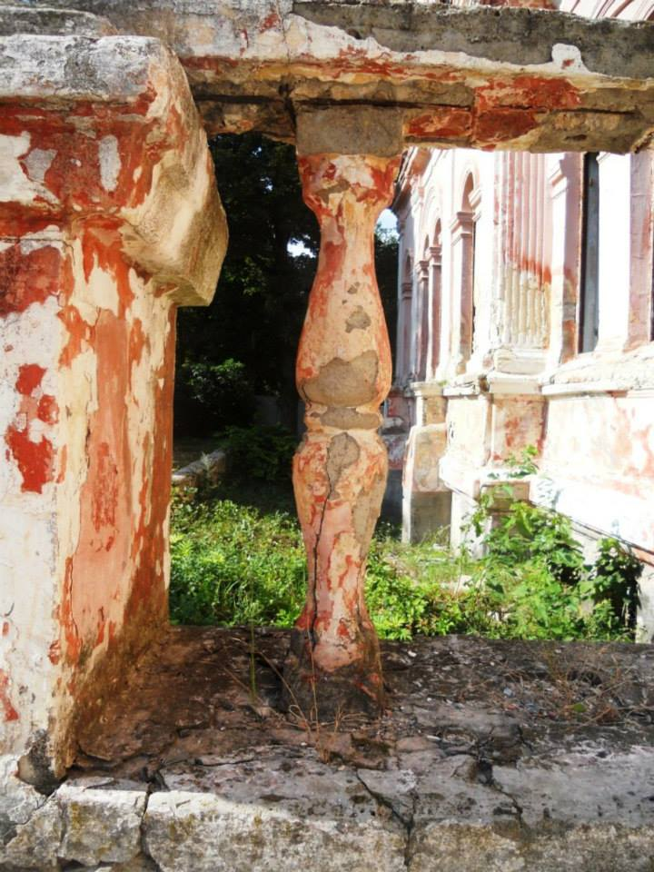
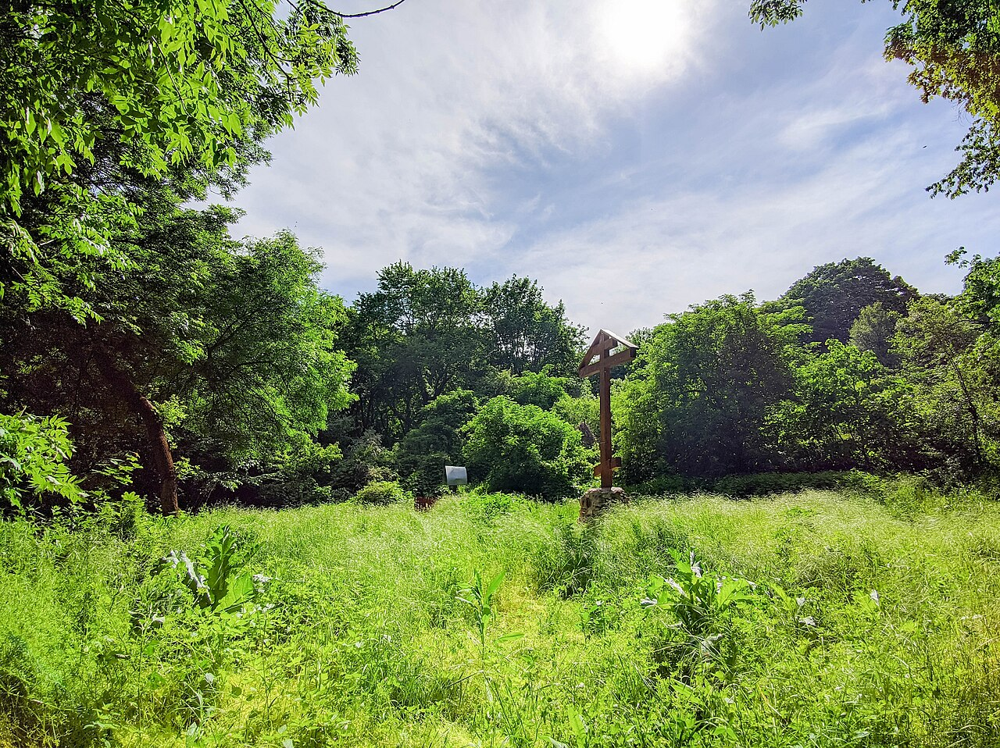
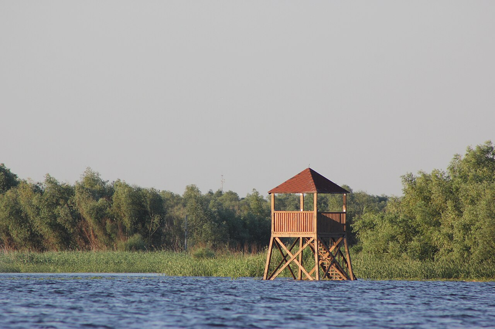

관광 명소 15곳
사진은 Wikimedia Commons에 공개된 실제 촬영본이며, 저작자와 라이선스를 각 사진 아래에 적었습니다. 촬영한 날씨·시기·구도에 따라 실제 모습은 다를 수 있습니다.
-

사진: Anna Stavenskaya · CC BY-SA 4.0 · Wikimedia Commons 오르헤이울 베키 문화·자연보호구역Orheiul Vechi
라우트강 굽이 위 석회암 절벽·동굴수도원·고대 유적이 함께 있는 대표 명소.
-

사진: Vebjorl · CC BY-SA 4.0 · Wikimedia Commons 소로카 요새Soroca Fortress
드네스트르강 변의 원형 평면과 다섯 탑이 특징인 중세 방어시설.
자세히 보기
슈테판 대공 시기의 목조 방어거점을 16세기에 석조로 고쳐 지었다. 다른 유럽 성과 달리 거의 완전한 원형 평면으로 한눈에 구별된다.
- 방문 유의사항
- 박물관 개장 상황 확인.
출처: turism.gov.md
-

사진: Visem · CC BY 4.0 · Wikimedia Commons 크리코바 지하 와인도시Cricova Wine Cellars
지하 터널과 방대한 병 저장고로 알려진 몰도바 대표 와인 명소.
-

사진: Sietske · CC BY-SA 3.0 · Wikimedia Commons 밀레슈티 미치 와인 저장고Mileștii Mici
거대한 지하 와인 저장 시설로 알려진 와인 관광지.
-

사진: Agenția de Inspectare și Restaurare a Monumentelor din Republica Moldova · CC BY-SA 4.0 · Wikimedia Commons 키시너우 대성당 공원·개선문Chișinău Cathedral Park
정교회 대성당과 개선문, 녹지 광장이 있는 수도의 중심부.
자세히 보기
소련시대 도시계획의 넓은 도로·공원과 19세기 교회건축을 함께 볼 수 있다. 국회의사당·박물관과 묶은 도보 동선도 적합하다.
- 방문 유의사항
- 공식 행사가 열리는 경우 통행제한 확인.
출처: turism.gov.md
-

사진: VictorCiobanu · CC BY-SA 4.0 · Wikimedia Commons 커프리아나 수도원Căpriana Monastery
산림으로 둘러싸인 몰도바의 역사 깊은 정교회 수도원.
-

사진: Agenția de Inspectare și Restaurare a Monumentelor din Republica Moldova · CC BY-SA 4.0 · Wikimedia Commons 쿠르키 수도원Curchi Monastery
초록 숲과 연못을 배경으로 여러 돔이 모인 수도원 단지.
자세히 보기
오르헤이울 베키와 연계하기 쉬운 종교건축 명소다. 물에 비친 교회와 붉은색 지붕을 함께 잡으면 인식성이 좋다.
- 방문 유의사항
- 공동체 종교생활 공간이므로 소음·드론 주의.
출처: turism.gov.md
-

사진: Tomasz Bladyniec · CC BY 4.0 · Wikimedia Commons 치포바 암굴 수도원Țipova Monastery
드네스트르강 골짜기 절벽에 조성된 암굴 수도원과 트레킹 지역.
자세히 보기
멀리 떨어진 석벽 구멍들이 종교생활의 자취를 보여준다. 같은 수도원이라도 지하·절벽 풍경으로 차별화된다.
- 방문 유의사항
- 일부 가파른 등산 구간; 날씨 확인.
출처: turism.gov.md
-

사진: Guttorm Flatabø from Sogndal, Norway · CC BY 2.0 · Wikimedia Commons 사하르나 수도원과 폭포Saharna Monastery
수도원·계곡 산책로·작은 폭포가 이어지는 순례·자연 명소.
자세히 보기
종교 공간에만 초점을 맞추기보다 물이 흐르는 숲계곡과 주변 풍경을 결합하는 것이 특징이다.
- 방문 유의사항
- 노면 미끄럼과 좁은 계단 유의.
출처: turism.gov.md
-

사진: Helgie12 · CC BY-SA 4.0 · Wikimedia Commons 카스텔 미미 와이너리 건축Castel Mimi
석재 성채풍 와이너리와 정원으로 알려진 와인문화 공간.
-

사진: Agenția de Inspectare și Restaurare a Monumentelor din Republica Moldova · CC BY-SA 4.0 · Wikimedia Commons 마누크 베이 저택Manuc Bey Mansion
19세기 귀족 저택과 장식적 외벽이 복원된 역사 단지.
-

사진: IurieSvet · CC BY-SA 4.0 · Wikimedia Commons 코드리 자연보호구역Codrii Reserve
몰도바 중부의 참나무·너도밤나무 숲과 야생동물을 보전하는 지역.
-

사진: Purcari company · CC BY-SA 4.0 · Wikimedia Commons -

사진: Bertramz · CC BY-SA 3.0 · Wikimedia Commons 가가우지아·콤라트Gagauzia Comrat
튀르크계 언어를 쓰며 주로 정교회를 믿는 가가우즈 공동체의 중심 지역.
-

사진: Criss90kf · CC BY-SA 4.0 · Wikimedia Commons 프루트강 하류 생물권보전지역Lower Prut Biosphere
프루트강 습지·호수·조류 서식지와 농촌 공동체가 공존한다.
여행 전에 확인하세요
운영시간·입장료·예약·개방 여부는 계절과 상황에 따라 바뀝니다. 방문 전에 각 명소의 공식 안내에서 다시 확인하세요. 카드의 "자세히 보기"에 참고한 출처를 적었습니다.